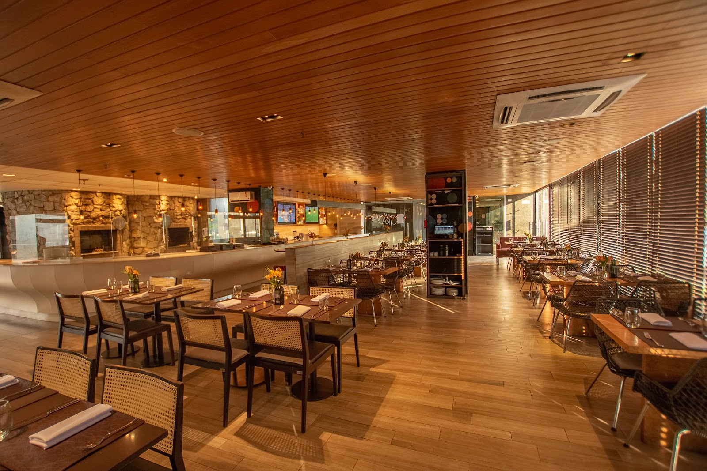

Pizzas artesanais e massas frescas em um ambiente que convida a ficar. Na Av. Presidente Antônio Carlos, desde quando comer bem era o programa perfeito.

O Dal Grano nasce da crença de que comer bem é um ritual — não uma transação. No salão de teto em madeira e parede de pedra, o tempo passa diferente.
Cozinha aberta à vista do salão, para que cada prato seja uma experiência do começo ao fim. Ingredientes selecionados, massas preparadas com técnica e carinho.
Pizzas artesanais
Massa de fermentação lenta, ingredientes importados e nacionais selecionados.
Massas e risotos
Receitas clássicas italianas preparadas com técnica e produtos de qualidade.
Pampulha, BH
Na Av. Presidente Antônio Carlos — coração da orla da Lagoa da Pampulha.
Do clássico neapolitano ao comfort food italiano — tudo preparado com ingredientes selecionados e técnica apurada.
Teto em réguas de madeira, parede de pedra natural, iluminação âmbar quente — o Dal Grano foi pensado para que a experiência comece antes do prato chegar.
Arquitetura rústica refinada
Madeira, pedra e luz que criam o clima certo para uma refeição especial.
Cozinha aberta
Veja a magia acontecer — o cheiro de pizza saindo do forno chega antes do garçom.
Av. Pres. Antônio Carlos, 7456
Pampulha, Belo Horizonte - MG
CEP 31270-672
(31) 3505-9240
Reservas e informações
Terça a Domingo
Almoço: 11h30–15h · Jantar: 19h–23h